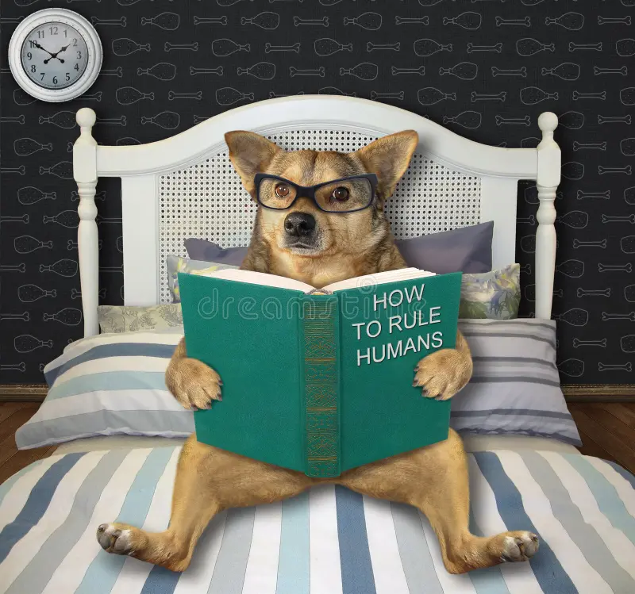

My Hobbies

Reading
I enjoy reading books on technology, philosophy, and self-development.
Photography
Capturing the beauty of nature and daily life is one of my passions.

Sports
I love playing football and cricket to stay active and healthy.